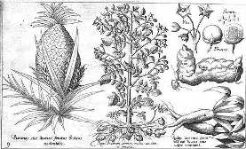

Honorius Philoponus, 1621
After an exploratory trip through the Caribbean,
Melchor de Barros claimed to have seen a region with land so good that giant trees grew there.
They were so tall that it was impossible to reach their tops by shooting arrows.
and it took six men holding hands to encircle their gigantic trunks.